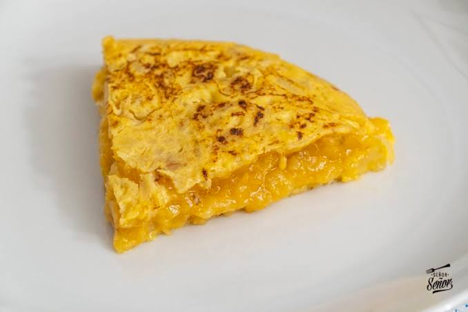

Tortilla de patatas
Ingredientes
- 6 huevos
- 4 patatas medianas
- 1 cebolla
- Aceite de oliva
- Sal

Elaboración
- Pelar y cortar las patatas en láminas finas y picar la cebolla.
- Freír las patatas y la cebolla a fuego medio hasta que estén blandas.
- Batir los huevos con sal y mezclarlos con las patatas escurridas.
- Cuajar la mezcla en la sartén por un lado y darle la vuelta.
- Dejar cuajar por el otro lado y servir.
Descargar receta en PDF
Volver al menú